Business Intelligence · Portafolio · Monterrey, MX
Gadiel Abraham Peña Hernández
Proceso manual entra. Tablero vivo sale.
Cuatro años convirtiendo hojas de cálculo dispersas en sistemas que se actualizan solos.
Tableros que un director abre cada mañana, apps donde el equipo captura desde el campo,
y flujos que conectan ambos sin que nadie mueva un archivo.
Sistemas y tableros con usuarios reales. Las cifras de proyectos privados aparecen
difuminadas por confidencialidad; la arquitectura y el funcionamiento se muestran completos.
Filtrar
Jefe de Monitoreo
2025 — ActualidadGobierno Municipal de Guadalupe, N.L.
Gobierno de Guadalupe/Innovación y Gobierno Digital/2026En producción
Reportes SIAC — Estadística de atención ciudadana
Seguimiento de los reportes ciudadanos del municipio: volumen, resolución, canal de
entrada, categoría y distribución geográfica en un solo lugar.
El problema
Los reportes vivían en el sistema SIAC y solo se extraía la base cruda a Excel.
No existía ninguna vista analítica: para saber cuántos reportes de
bacheo se resolvieron en el trimestre había que armar el cálculo a mano cada vez.
Lo que construí
Un tablero conectado a SQL Server con indicadores de recepción y
resolución, tendencia mensual, desglose por categoría y dependencia responsable,
canales de captación y mapa de calor georreferenciado por colonia.
El resultado
Más de 200 mil reportes analizables al instante. Lo usa el Secretario
de Innovación y Gobierno Digital, otras áreas del municipio y el área de transparencia
para sus reportes de rendición de cuentas.
Tablero
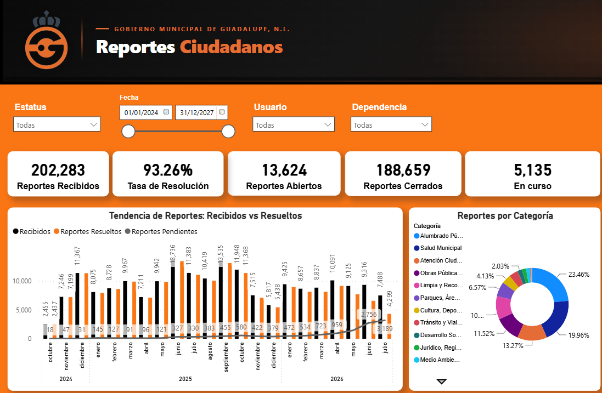
Una sola página con desplazamiento vertical. El mapa de calor concentra los reportes por
zona; los canales de captación distinguen entre atención presencial, chat, call center,
brigadas y redes.
Power BISQL ServerMapasDAXSector público
Gobierno de Guadalupe/Todas las dependencias/2026Presentado al Alcalde
Alcalde Cómo Vamos — Monitoreo de indicadores municipales
Seguimiento del desempeño del municipio frente a los indicadores que evalúa la
plataforma ciudadana Alcalde Cómo Vamos, con avance contra meta y puntaje estimado.
El problema
Los indicadores se reportaban por separado en cada dependencia y
nadie tenía la vista completa antes de la evaluación externa.
El resultado se conocía cuando ya no había margen para corregir.
Lo que construí
Un tablero navegable por evaluación y por dependencia, con
semáforo por indicador según cumplimiento de meta y el cálculo del
puntaje obtenido contra el máximo posible.
El resultado
El municipio anticipa su calificación en lugar de recibirla. Se
identifica qué indicadores están en rojo y con qué dependencia hay que trabajar,
con tiempo para actuar. Se presenta directamente al Alcalde.
Tablero
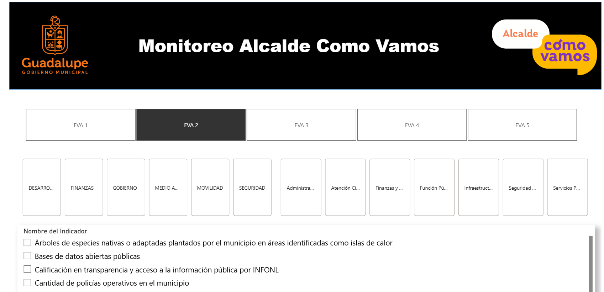
Los nombres de los indicadores son información pública; metas, avances y puntajes
aparecen difuminados.
Power BIDAXNavegación por marcadoresSector público
Analista de Soporte Operativo
2023 — 2025CEMEX · VP Infraestructura y Gobierno
CEMEX/Infraestructura y Gobierno/2024Sistema completo
Contratos — Captura móvil, flujo automático y tablero
Ciclo cerrado para la cartera de obra pública del área: el equipo registra desde el
celular y el tablero se actualiza solo, sin que nadie toque un archivo.
El problema
El avance de cada contrato vivía en hojas de cálculo actualizadas a mano y compartidas
por correo. Nadie sabía cuál era la versión buena, y armar el reporte
de avance era trabajo manual que se repetía cada periodo.
Lo que construí
Una app móvil con alta, edición, baja y consulta sobre SharePoint.
Un flujo que detecta cada cambio, refresca el modelo de Power BI y
notifica al equipo. Y un tablero con indicadores y diagrama de Gantt.
El resultado
Una sola fuente de verdad. El cambio capturado en campo llega al tablero en
menos de cinco minutos. El reporte de avance dejó de armarse: ya existe.
Arquitectura
Tablero y aplicación
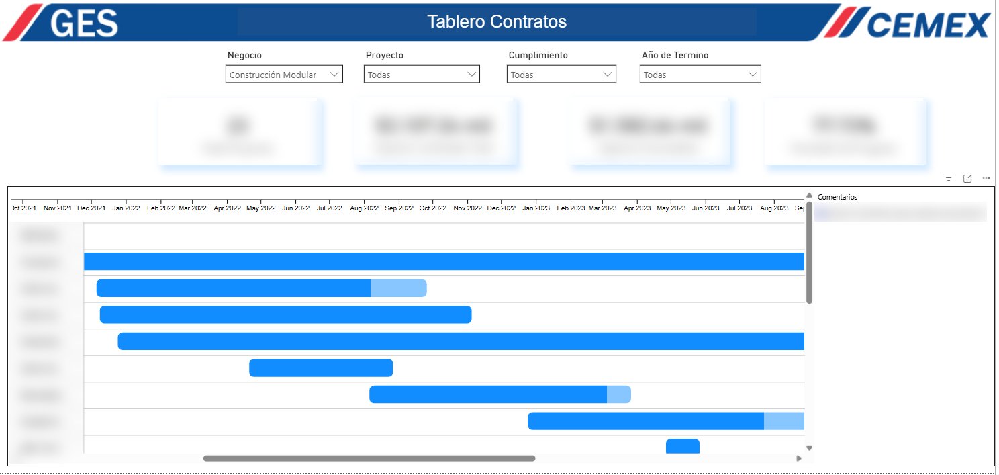
Nueve pantallas con confirmación antes de cada operación que modifica datos.
Diseñada para usarse desde el teléfono, en campo.
Power BIPower AppsPower AutomateSharePointGanttDAX
CEMEX/Dirección de la VP/2025Sistema completo
Estimaciones — Avance nacional en una sola vista
Consolidación del avance de estimaciones de los proyectos de construcción del país,
para consulta directa de la Vicepresidencia.
El problema
Cada uno de los 18 a 20 proyectos tenía su propio archivo de Excel con
su avance. Para saber cómo iba la cartera completa había que abrirlos uno por uno.
El VP quería una sola herramienta.
Lo que construí
Una app de registro sobre SharePoint donde se captura el ciclo de cada
estimación, y un tablero con actualización automática desde
Power BI Service.
El resultado
Veinte archivos se volvieron una vista. Estatus de proyecto, avance
ejecutado contra contratado y contra facturado, con semáforo por proyecto y consulta
en tiempo real.
Tablero y aplicación
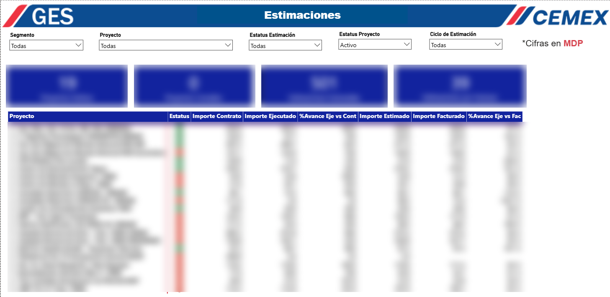
Power BIPower AppsSharePointPower BI Service
CEMEX/VP Infraestructura y Gobierno/2025
Portal interno de Reportes y Proyectos
Sitio en SharePoint que centraliza la reportería del equipo de costos: menú de
navegación, subpáginas por tema y tableros de Power BI embebidos para consultarse sin
salir del sitio. Un solo destino para toda la VP, en lugar de archivos
circulando por correo.
Subpágina con tablero embebido
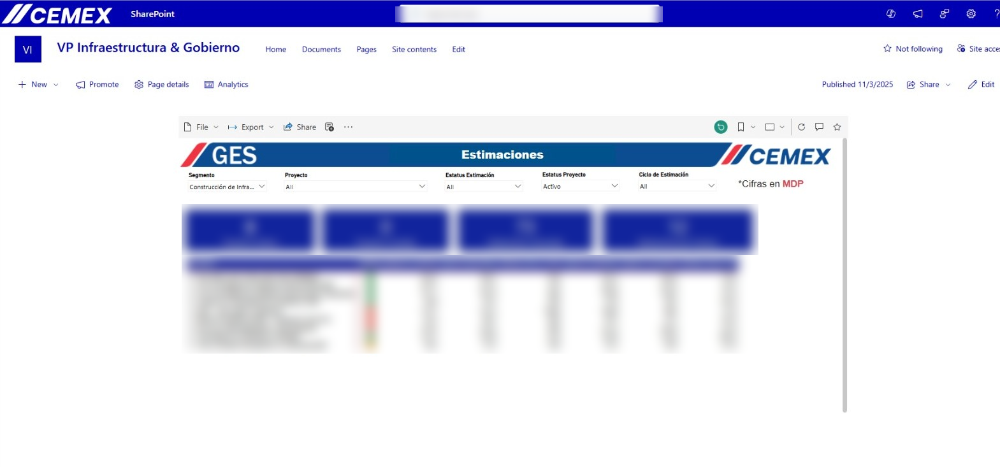
SharePointPower BIPublicación web
CEMEX/Equipo de costos/2025
Costos en Línea
Cuatro vistas del costo de las áreas que integran la VP —Construcción, Construcción
Modular y Pavimentos— sobre información originada en SAP. Sustituyó
tablas pivote de Excel y, al publicarse en la nube, dejó de ser un archivo local para
volverse una referencia compartida entre áreas.
Páginas del tablero
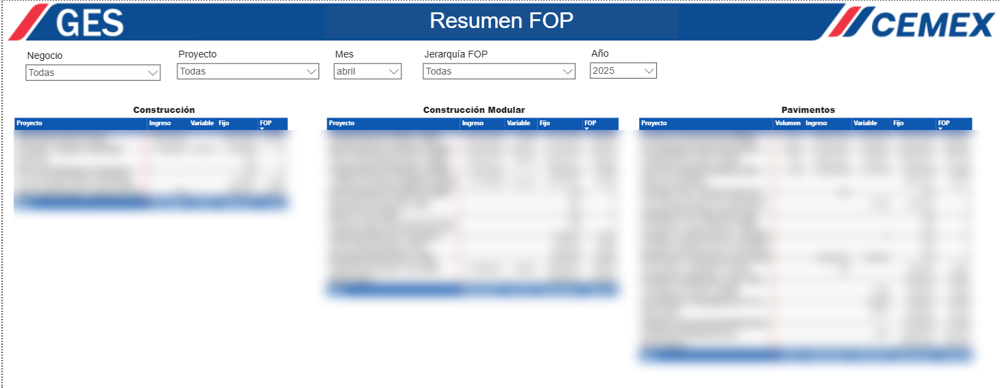
Power BISAPModeladoDAX
CEMEX/VP Infraestructura y Gobierno/2025
FOP vs EBIT
Comparativo mensual y tendencia anual del FOP contra el EBIT de la Vicepresidencia,
desglosado por línea de negocio. Antes se armaba con
gráficas hechas a mano en Excel; ahora es una vista que se actualiza
con la información de SAP.
Tablero
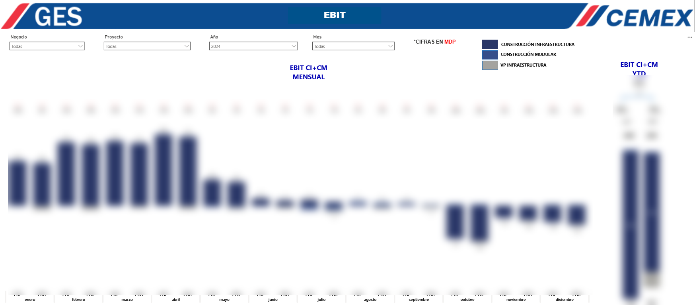
Power BISAPAnálisis financiero
CEMEX/Soporte operativo/2025
Pagos Centralizados
Comportamiento de los costos centralizados de la operación —vigilancia, combustible,
arrendamientos, mantenimiento vehicular, peajes— por proyecto y por unidad.
Los tres Top 10 al pie no son decorativos:
levantan la alerta sobre las unidades con gasto atípico y disparan
la conversación con el operador responsable.
Carátula del reporte
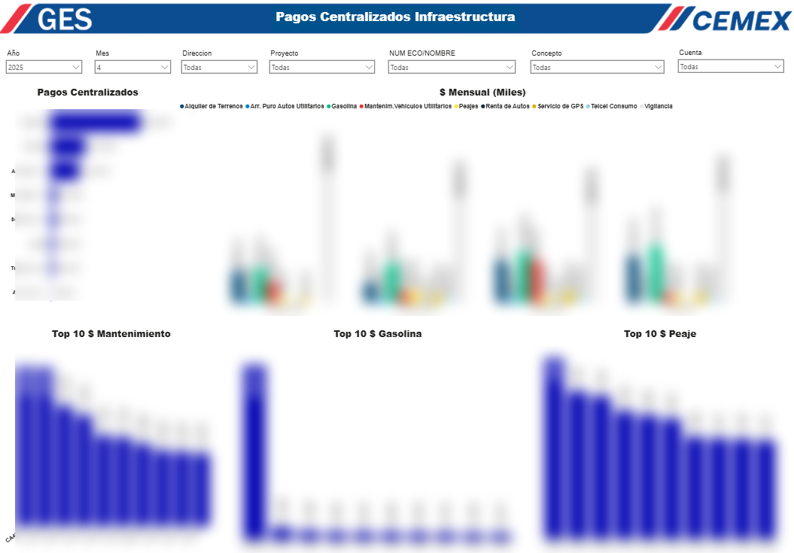
Power BISAPDetección de desviaciones
Practicante de Análsis de datos
2022 — 2023CEMEX · DNOM
CEMEX/Mantenimiento nacional Constructores/2022
Tablero MP — Mantenimientos preventivos y correctivos
Seguimiento del cumplimiento de mantenimientos preventivos de la flota de camiones
revolvedores por plaza, zona y región del país, con costo total y ponderado de
cumplimiento por marca y módulo. Alimentado desde una base en
Access construida con información de SAP.
Carátula
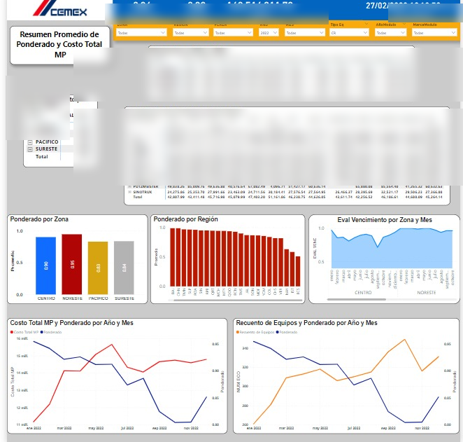
Power BIAccessSAPGestión de flota
CEMEX/Mantenimiento nacional/2022
Disponibilidad de equipos
Estatus operativo de la flota de revolvedores clasificado en cinco conceptos, con
conteo por año-modelo, distribución porcentual y desglose por zona. Permite ver de un
vistazo cuántas unidades están realmente operando frente a las
detenidas por mantenimiento, correctivo o baja.
Una de las páginas
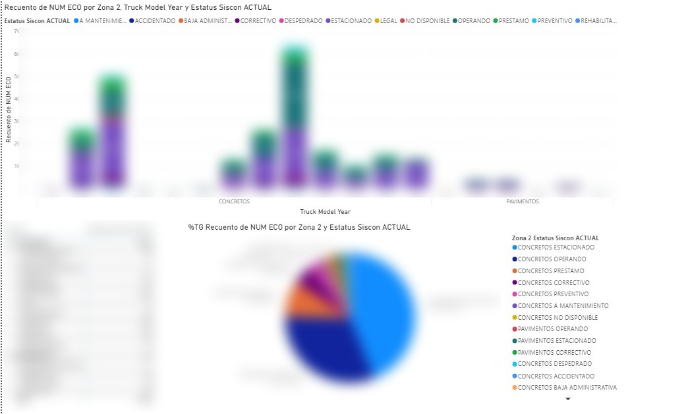
Versión previa a la entrega final.
Power BIAccessSAP
Papalote Museo del Niño MonterreyPropuesta de indicadores
Desempeño operativo
Me entregaron las bases de datos y carta abierta para proponer qué medir.
Definí los indicadores desde cero: visitantes, ingreso por visitante,
margen de utilidad, composición de ingresos por fuente y de costos por tipo, y ranking
de días con mayor ingreso. La paleta sigue la identidad del museo.
Tablero propuesto
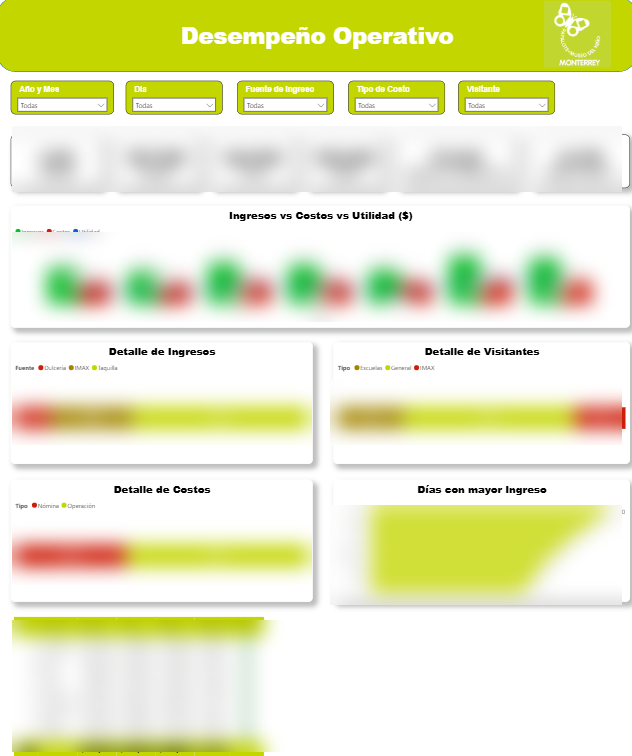
Power BIDefinición de KPIsDiseño visual
02 — Otros trabajos
Automatización y bases de datos
Trabajo sin capturas disponibles, sobre el que respondo con gusto cualquier pregunta.
2022 — 2023
Migración de bases históricas a SQL
Consolidé información dispersa en archivos de Excel desde 2014 hasta 2022 en una base
SQL. La propuesta salió de un límite concreto: el volumen ya no se podía consultar en
Excel. Identifiqué el problema, propuse el cambio de motor y ejecuté la migración.
2022 — 2023
Automatización de descargas de SAP con macros
Macros que ejecutan la extracción de transacciones de SAP con condiciones
predefinidas: el reporte que antes se armaba manualmente cada vez queda listo
con un botón.
2023
Seguimiento de Órdenes de Compra
Tablero sobre el comportamiento de las órdenes de compra del área de mantenimiento,
a partir de las transacciones extraídas de SAP.
2023
Balance de costos
Resumen de costos por tipo con línea de tendencia para observar el comportamiento
a lo largo del año.
03 — Servicios
En qué puedo ayudarte
Trabajo por proyecto, con alcance y entregables definidos desde el inicio.
Tableros de control
Del dato crudo al tablero que tu equipo abre cada mañana. Modelado, medidas y visualización pensada para responder preguntas, no para llenar espacio.
Automatización de procesos
Flujos que eliminan el trabajo repetitivo: capturas, aprobaciones, avisos y actualizaciones que hoy alguien hace a mano cada semana.
Apps internas a la medida
Aplicaciones para que tu equipo capture y consulte información desde el celular, conectadas al resto de tus herramientas.
04 — Contacto
¿Tienes un proceso que se hace a mano?
Cuéntame cómo trabaja hoy tu equipo y te digo qué se puede automatizar,
qué no conviene tocar y cuánto tomaría.